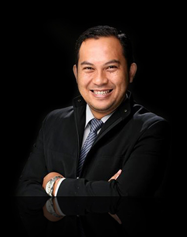
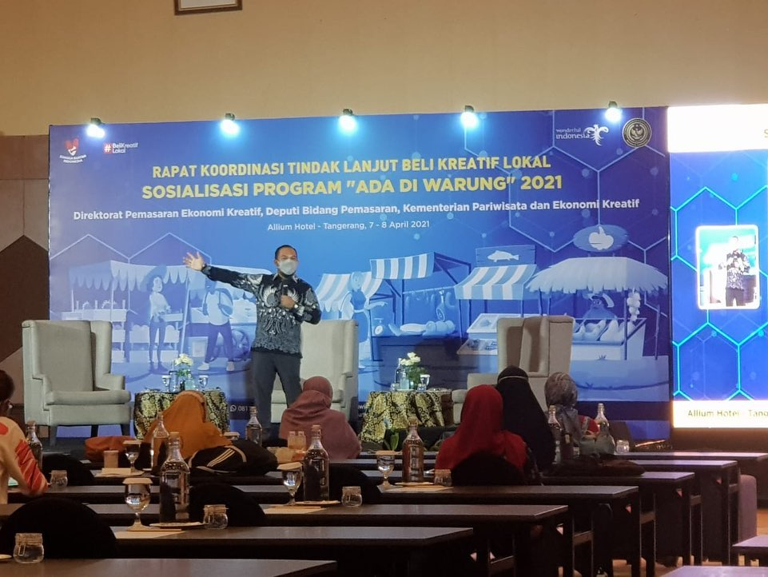
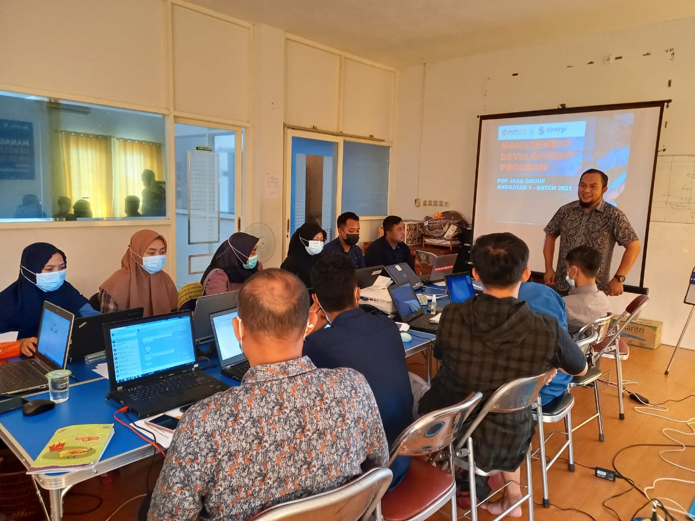
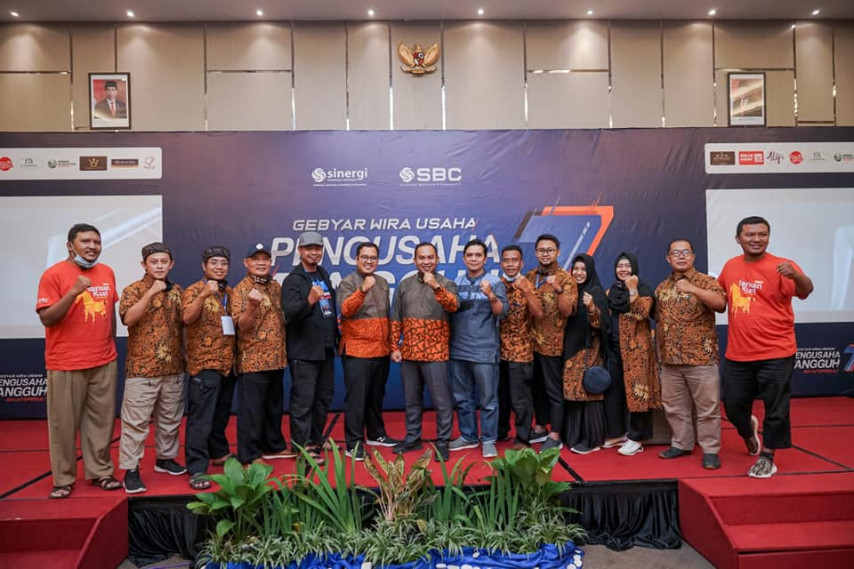
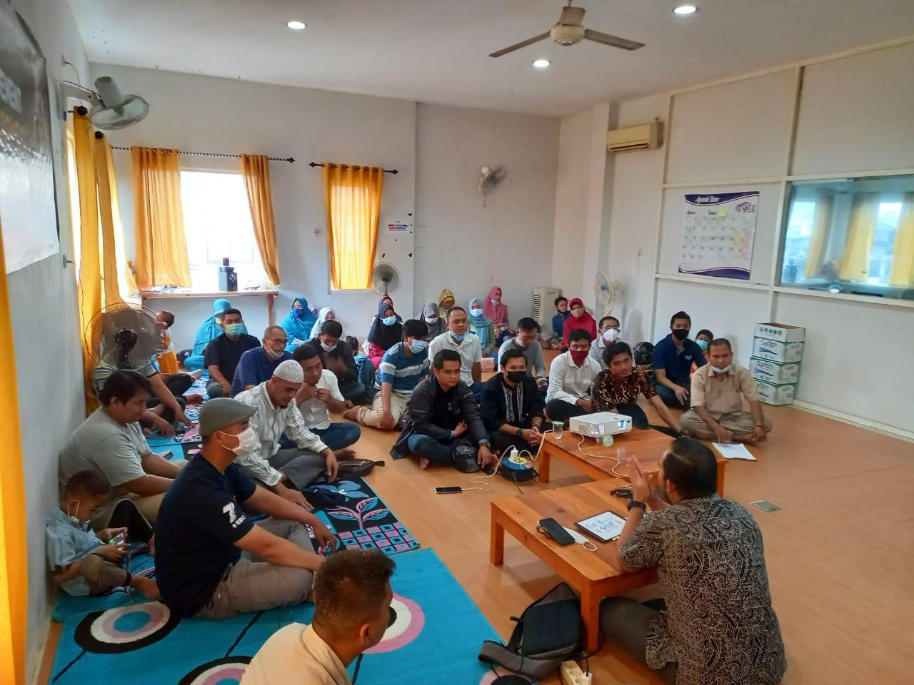
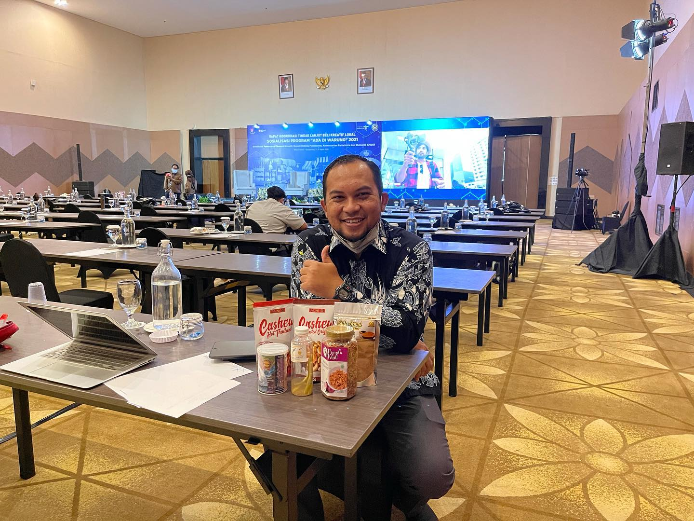
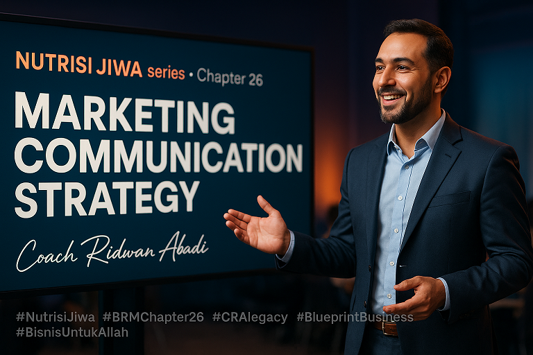
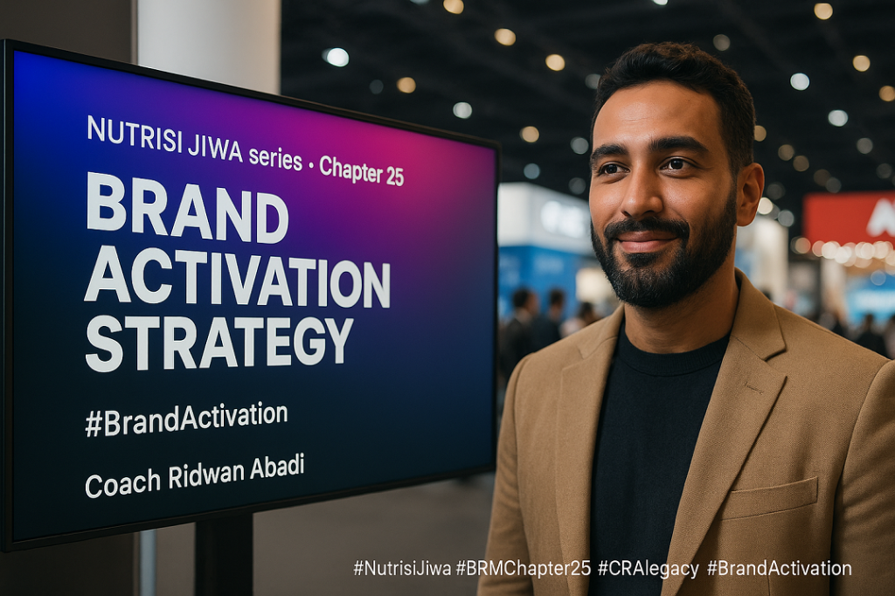
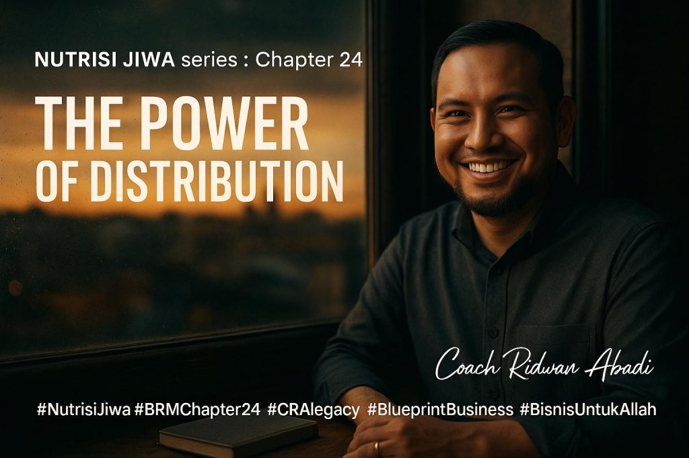
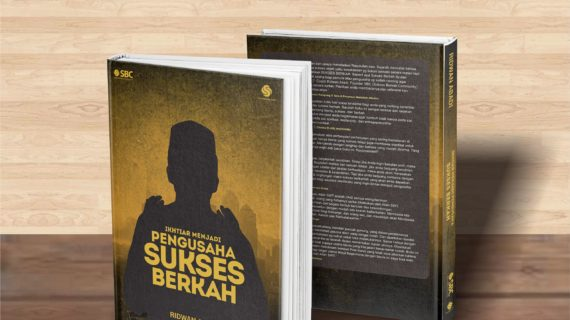

Proyek berjalan
Business coach · Entrepreneur · Founder Sinergi Business Solution
Coach
Ridwan Abadi
Business coach dan entrepreneur yang mendampingi pemilik usaha membangun sistem, mengembangkan tim, dan menyiapkan bisnis untuk bertumbuh.

01 / 04Founder
Sinergi Business Solution
Sinergi Business Solution
01Tentang Coach
Bisnis bukan sekadar tumbuh.
Ia bisa membawa makna.
Coach Ridwan Abadi, S.M., M.M., adalah Scale-Up Business Coach dan praktisi bisnis dengan pengalaman lebih dari 20 tahun.
Lewat Business Owner School dan Sinergi Business Solution, ia membantu pelaku usaha membangun sistem, memperkuat tim, dan tumbuh dengan arah yang jelas.
Lihat jejak kolaborasiPerjalanan dan kontribusi
Sejak memulai perjalanan wirausaha pada 2003, Ridwan membangun dan mengelola usaha di sektor edukasi bisnis, kuliner, dan agrobisnis. Ia mendirikan Business Owner School dan Sinergi Business Solution untuk mendampingi pelaku UMKM hingga perusahaan memperkuat manajemen dan memperluas skala bisnis.
Dalam lima tahun terakhir, ia mendampingi lebih dari 50 klien profesional. Pengalamannya mencakup pendampingan sebuah perusahaan UMKM hingga melantai di bursa (IPO), serta pengembangan desa wisata berprestasi di Batu, Malang.
Portofolio kolaborasinya mencakup Kementerian Koordinator Bidang Perekonomian, Kemenparekraf, DJP, BEKRAF, pemerintah daerah, dan perusahaan swasta.
Keahliannya meliputi strategi scale-up, manajemen bisnis, pengembangan SDM, dan leadership. Sejumlah penghargaan yang pernah diraih antara lain Juara Nasional Wirausaha Muda Mandiri 2010 (Kategori Boga), Juara 1 Wirausaha Muda Mandiri Jawa Timur 2010, Franchise Berprestasi 2010 versi Profesi Indonesia, GO Triple Start-Up Business TDA Award, Best Idea Regional Axio Marketing Award 2009, serta Pemuda Pelopor Kota Malang.
Sebagai pelatih bisnis dan Certified Public Speaker, Ridwan juga menulis beberapa buku, termasuk Pengusaha Sukses Berkah, The Power of Sinergi, dan Sistemasi Bisnis Juragan Naik Kelas.
Berpegang pada moto “Bisnis bukan sekadar untuk bertumbuh, tapi untuk memberi makna dan keberkahan,” ia berkomitmen melahirkan pebisnis yang berdaya saing dan bermanfaat bagi masyarakat.
Fokus keahlianStrategi scale-up
PengembanganSistem & organisasi
PendekatanBertumbuh dengan makna
Pencapaian Coach
Perjalanan dalam angka
Klien
Nominasi penghargaan
Tahun pengalaman
02Yang Dikerjakan
Ruang untuk
bertumbuh bersama.
Program disesuaikan dengan kebutuhan pemilik usaha, tim, komunitas, maupun organisasi.
Seminar & Workshop
Berbagi perspektif dan alat praktis untuk memperkuat cara pandang serta kapasitas bisnis.
Coaching Bisnis
Pendampingan strategis yang berangkat dari tantangan dan kebutuhan spesifik bisnis.
Pendampingan Komunitas
Program penguatan pelaku usaha dan komunitas agar dapat berkembang secara terarah.
03Jejak Kolaborasi
Bertemu di banyak
ruang pertumbuhan.
Pengalaman lintas organisasi, program pengembangan, dan komunitas bisnis.

Kolaborasi publik01 — Program & kebijakan
Kemenparekraf RI
Kolaborasi dalam program pemberdayaan dan penguatan usaha kreatif.

Pengembangan organisasi02 — Management Development
Program MDP
Penguatan kapasitas manajerial dan kesiapan tim untuk bertumbuh.

Komunitas03 — Ekosistem wirausaha
Sukses Berkah Community
Ruang belajar, jejaring, dan penguatan semangat kewirausahaan.
04Catatan Perjalanan
Ide tumbuh
di dalam pertemuan.
Potongan dari ruang belajar, panggung, dan kerja bersama.
Jelajahi galeri lengkap

05Catatan & Gagasan
Pemikiran yang
bisa dibawa pulang.

Marketing Communication Strategy
Awareness saja belum cukup untuk membuat orang membeli. Bab ini membahas cara mengubah rasa tahu menjadi minat melalui edukasi yang relevan, bukti yang meyakinkan, dan pemicu aksi—dengan pesan yang konsisten di berbagai kanal.
Baca artikel
Brand Activation Strategy
Produk yang sudah tersedia belum tentu langsung dicari pelanggan. Artikel ini mengulas Brand Activation untuk membangun kesadaran dan posisi yang kuat di benak pasar, mulai dari konten yang relevan hingga kampanye terpadu online dan offline.
Baca artikel
Kekuatan Distribusi
Produk yang bagus akan sulit terjual jika sulit ditemukan. Chapter ini membahas perencanaan stok, pemilihan kanal online maupun offline, strategi pull dan push, serta pemanfaatan data agar produk hadir lebih dekat dengan pelanggan.
Baca artikel
06Gagasan dalam Buku
Ikhtiar Menjadi
Pengusaha Sukses Berkah
Bisnis dapat menjadi jalan untuk bertumbuh sekaligus memberi manfaat dan keberkahan bagi sesama.
07Klien & Mitra
Tumbuh bersama
mitra yang berarti.
01/05
RUANG BERIKUTNYA
Setiap bisnis punya
cerita pertumbuhan.
Temukan gagasan, pengalaman, dan ruang kolaborasi bersama Coach Ridwan Abadi.